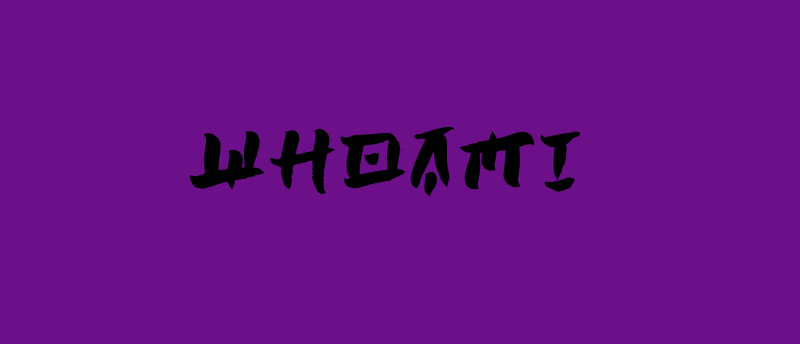

Welcome to my blog! This is where I will be recording my journey as a beginner cybersecurity enthusiast with the aims of being 1337. This blog will feature walkthroughs on different platforms and also writeups of interesting CTFs/Challenges that I take part in. I am currently interested in the fields of penetration testing (network and web app) and reverse engineering, which will be what most of what this website is about. The reason why I decided on starting up my own website is because, it is a great way to record your work, my work will be available to people to learn and also for me to learn from them, and finally because I love doing this and I want to give back to the community that taught me everything.So stick around, read up, correct me if I'm wrong, ask questions, and criticism is highly valued and welcomed. You can always reach me at my email and Twitter linked below.
Follow @BIT_R0nIn